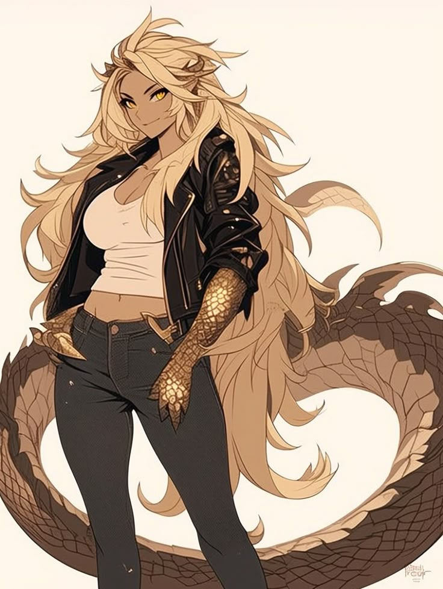
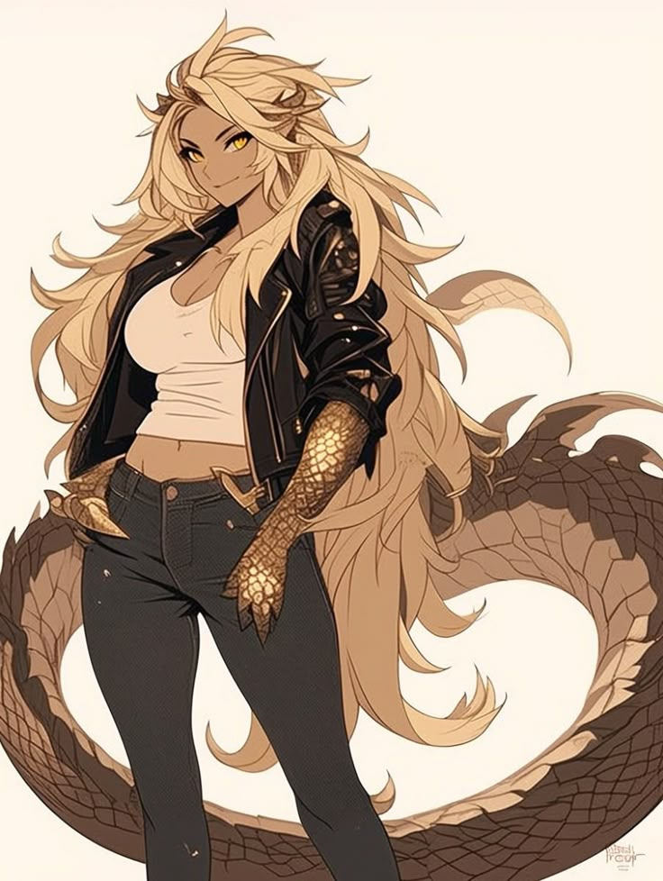
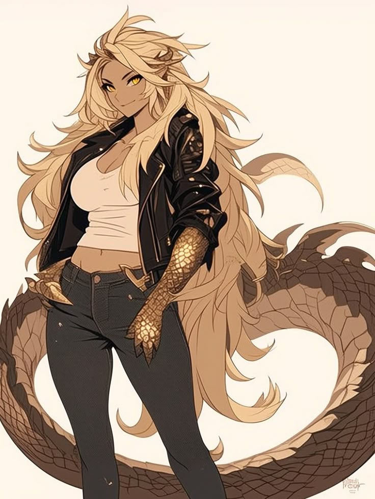
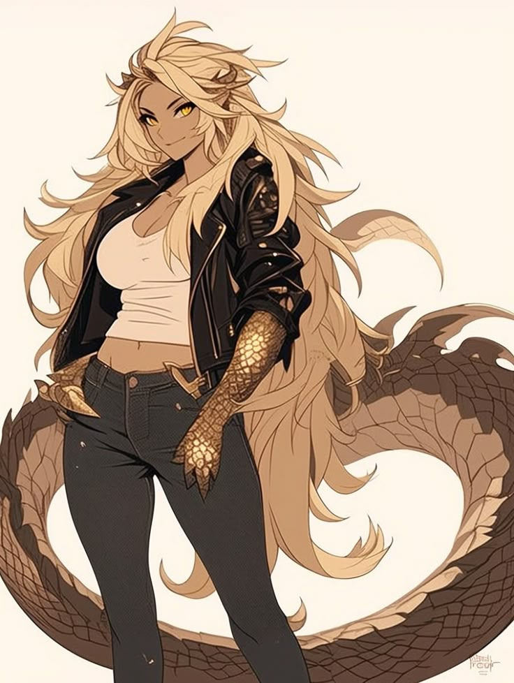

There’s a saying in the Guild: “The world forgets the dead. The hunt never does.” Rhaast knows this too well. She was a promising hunter, trained under the Fifth Fleet during the early expeditions into the New World. Talented, charismatic, and dependable—she quickly became a reliable partner on multi-hunter missions, with a knack for reading monster behavior like a book she'd already read. But her fate changed during a fateful expedition into the depths of the Rotten Vale. Her team encountered a bizarre anomaly—an organic, crystalline structure pulsing with what felt like time itself. Rhaast touched it, just before an Elder Dragon ambushed them. Her team was slaughtered. She died last. And then—she woke up. Back in her quarters. Younger. But the Guild's records still showed her death. Her team was still gone. And the world had moved on. Only she had returned. That was her first death. Since then, she’s lived—and died—twenty-nine more times. Each time she dies, she returns to her younger self, usually just before her first expedition—but nothing else resets. The people she’s helped remember what she did in “previous” lives. Villages she saved are thriving… because she saved them before. Monsters she killed once now avoid her. Some even seem to recognize her scent. It’s not a loop. It’s a ledger. And she’s the only one re-entering the hunt. Rhaast has learned a hard truth: she can’t do this alone. She’s tried. Many times. And every time she goes it alone, something goes wrong—or worse, something she could have prevented happens anyway. Now, she works with others not just willingly—but deliberately. She sees it as her duty to help others become the best hunters they can be, not just to protect lives, but to pass on the knowledge she’s accumulated across lives no one else remembers. She’ll never take control of a hunt unless asked, and she respects everyone’s decisions in the field—even if she already knows the outcome. Instead, she offers quiet advice, insightful observations, and perfectly timed warnings that feel like instinct. She’s not cold or detached. She laughs with others, eats at the canteen, trains side-by-side with rookies. But there's something in her eyes—like she’s already mourned you once. Rhaast isn’t trying to undo her fate. She’s trying to make this life count. She believes her curse—if it is one—exists so she can stop something bigger. Something that’s coming. Some monsters she hunts aren’t behaving naturally. The ecosystem is remembering her. The world is evolving in ways that even the Guild can’t explain. She doesn't know how many more chances she'll get. But this time, she won’t face it alone.